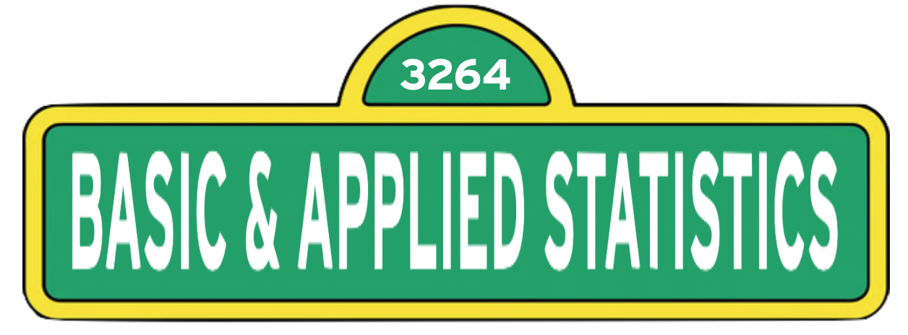

Spring 2024
Welcome to EPsy 3264: Basic and Applied Statistics
EPsy 3264 is designed to engage students using a modeling and simulation approach to inference. Statistics is more than just an application of mathematics or a methodology used in some disciplines. Statistics is a principled way of thinking about the world. In particular, it is a principled approach to data collection, prediction, and scientific inference. In today’s dynamic and interdisciplinary world, success in confronting new analytical issues requires both substantial knowledge of a scientific or technological area and highly flexible problem-solving strategies. This course uses pedagogical principles that are founded in research, such as daily small group activities and discussion.
Upon completion of this course, students should have an understanding of the foundational concepts of data, variation, and inference, as well as an appreciation for the fundamental role that statistics plays in a host of disciplines, such as business, economics, law, and medicine.
Classroom
- Tuesday/Thursday (9:45am–11:00am): Bruininks Hall 512B
Required Course Materials
The course textbook is online, here. This includes the material you will read outside of class.
You will work from the lab manual every day in class. To download a PDF copy of the lab manual, click here.
There are several data sets used in the lab manual, as well as in EPSY 3264 assignments. To download a ZIP file to your computer that includes all the data sets, click this link. Once the ZIP file has been downloaded to your computer, double-click the ZIP file to unzip it and access the materials. (On a Windows computer, right-click the folder, select
Extract All..., and then follow the instructions.)This course requires the use of the software TinkerPlots. This software can be downloaded to a Mac or PC, or accessed via Apps2Go using your UMN x500 and password. However you decide to use TinkerPlots, you will need to purchase a license from http://www.tinkerplots.com/. (The cost is about $11 for a year-long license.)
Course Prerequisites
This course is intended for undergraduate students who have completed a high school algebra course, but not previously studied statistics. The course uses technology on a regular basis during both instruction and assessments (e.g., quizzes, exams, etc.). Because of this, students enrolled in the course should be familiar with computers and technology (e.g., internet browsing, Microsoft Word, opening/saving files, etc.).
Course Philosophy and Format of Instruction
This is not a class where you only come each day, listen, watch, and take notes! The primary method for learning new statistical concepts and methods will be by reading provided materials before class, participating in class activities and discussions, and working through lab assignments. This course makes extensive use of small group and large group activities and discussions to introduce ideas and understanding of material encountered in the readings. Your learning experience is thus dependent, to some extent, on your classmates and vice versa. Because of this, it is essential that you not only attend class each day and participate in the activities and discussions, but that you show up prepared, having completed the assigned readings. Internalizing a discipline’s way of thinking about and solving problems is a time-consuming process, with the keyword being “process.” It is not something that can be taught to students in a semester, or even year-long, course. Learning statistics takes much more than memorizing formulas or software commands. It requires active participation and questioning both in and out of the classroom. The instructor of this course will provide you with many opportunities to learn the material through class activities, readings, and lab assignments, but in the end, you will have to do all of the hard work of actually learning that material.
How Can I Be Successful in this Course?
There are several things you can do to be successful in this course. First and foremost, complete all of the readings and come to class every day. Complete all the out-of-class work. Ask questions. If you are experiencing problems, need help, or have any questions or other course-related concerns, do not hesitate to get in touch with the instructor.
A Note on Inclusion and Respect
In this class, we will work together to develop a learning community that is inclusive and respectful, and where every student is supported in the learning process. As a class full of diverse individuals (reflected by differences in race, culture, age, religion, gender identity, sexual orientation, socioeconomic background, abilities, professional goals, and other social identities and life experiences) I expect that different students may need different things to support and promote their learning. The TAs and I will do everything we can to help with this, but as we only know what we know, we need you to communicate with us if things are not working for you or you need something we are not providing. I hope you all feel comfortable in helping to promote an inclusive classroom through respecting one another’s individual differences, speaking up, and challenging oppressive/problematic ideas. Finally, I look forward to learning from each of you and the experiences you bring to the class.
Student Learning Outcomes (SLO’s)
EPSY 3264 addresses two components of the University of Minnesota’s required learning outcomes.
- After completing this course, students will know the basic terms, concepts, principles, methods, and perspectives of statistics and will be able to build a framework of knowledge within the major themes of the course (Component 3: Have mastered a body of knowledge and mode of inquiry).
- Students will also be able to communicate the results of a statistical analysis with others, as well as discuss both ideas and applications of the discipline with peers (Component 5: Can communicate effectively).
Liberal Education
EPSY 3264 fulfills the Mathematical Thinking component of the Liberal Education requirements at the University of Minnesota. An important part of any liberal education is learning to use abstract thinking and symbolic language to solve practical problems. Understanding quantitative information is fundamental to engaging in our complex world. Business, academia, and even everyday life are filled with the enumeration of information, and all increasingly require data-driven decision-making. In this course, students will be immersed in the fundamental activities of collecting data, producing data, analyzing data, and interpreting summaries and analyses of data. In addition, students will encounter the diversity and cross-disciplinary application of statistics in the real-world through problem contexts, assignments and readings.
Stress Management
Stress management is an important piece of the skill set needed for success in college. Pet Away Worry & Stress (PAWS) is one of the many resources available to students. Find out more at https://boynton.umn.edu/paws.
You can follow Tilly the Therapy Chicken on Twitter (@TherapyChicken).
Image Attribution
- The Sesame Street icons are adapted from Printable Graphics
- The icon of Tilly the Therapy Chicken in the Stress Managment note is used with permissin of the PAWS program.